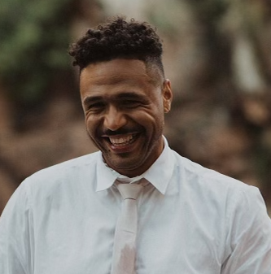

Christopher Beaudoin
Software Dev
Summary
Highly motivated entrepreneur with a strong passion for technology and a focus on transitioning into a software development role. Known for effective communication, videography, photography, and leadership skills. Demonstrates a quick learning ability and thrives in problem-solving situations. Recognized for exceptional work featured in Martha Stewart and Junebug Weddings, voted number one in Dallas for three consecutive years. Now seeking a new career opportunity in the tech industry.
education
- High School Diploma, Year (2009)
- College-level coursework completed
work ecperience
Northmark Films, Fort Worth, Texas
Owner, Lead Shooter, and Editor | YYYY - Present
- Successfully owned and operated a films company, specializing in capturing and editing videos for various events.
- Expertly shot footage on the event day, ensuring high-quality content and capturing important moments.
- Utilized strong editing skills to create visually compelling and engaging videos for clients.
- Set up audio equipment, additional cameras, and lighting to enhance the overall production value.
- Demonstrated exceptional communication skills to effectively understand and meet client expectations.
Novo Photobooth, Fort Worth, Texas
Owner, Lead Trainer, and Technical Support | YYYY - Present
- Established and managed a photobooth business, providing memorable experiences for clients.
- Led training sessions for the team, ensuring smooth operations and exceptional customer service.
- Provided technical support for photobooth setup, troubleshooting, and maintenance.
- Developed and maintained relationships with clients, delivering personalized services to meet their needs.
skills
- Effective communication
- Videography and photography expertise
- Strong leadership abilities
- Fast learner and adept problem solver
awards and certifictions
- Featured work in Martha Stewart and Junebug Weddings
- Voted number one in Dallas for three consecutive years
Career Objective
To leverage my entrepreneurial background, creative skills, and passion for technology to transition into a software development role. Committed to continuous learning and contributing to the growth of innovative tech projects.
other
My Business
Contact me